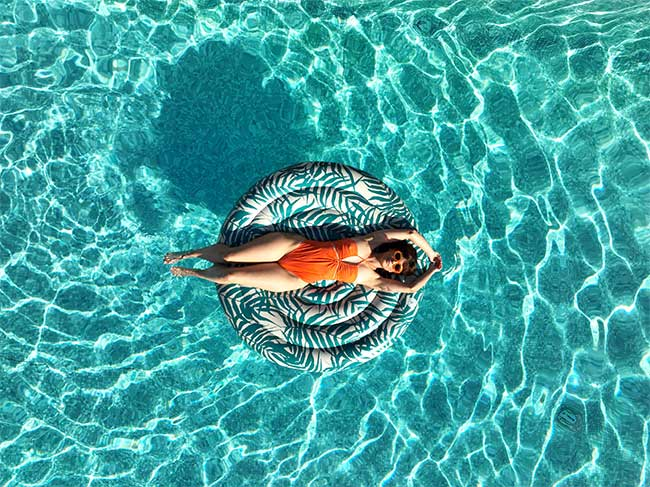

Hôtel Casarose, avis : le 4 étoiles West Coast qui ne ferme jamais
Soixante-douze clés dans trois bâtiments de couleurs, une villa de 155 m² avec sa piscine, un ponton privé sur la Siagne et une table californienne, à huit kilomètres de Cannes. Sa vraie singularité tient en trois mots : ouvert à l'année.

Sortie avec skipper depuis le ponton privé du Casarose, sur la Siagne puis en mer. Photo : site officiel de l'établissement.
TL;DR : l'essentielScore LMHS 8,6/10, Indice Azur 3,9/5
- Ouvert toute l'année, ce qui est rare sur cette côte où l'essentiel de l'hôtellerie de loisir ferme de novembre à mars. C'est l'argument principal de la maison, et il est structurel plutôt que décoratif.
- 72 chambres et suites dans trois bâtiments aux palettes distinctes, plus une villa indépendante de 155 m² pour six personnes, avec piscine privée. Table californienne des chefs Marie Lecoq et Mickaël Bourget.
- Premier établissement certifié SenCité, avec 88,6/100. Mais pas de spa au sens propre : un espace wellness, un sauna à infrarouges et une esthéticienne, ce qui pèse sur notre note.
Avis documentaire. Nous n'avons pas dormi au Casarose. Les éléments de cette page ont été relevés le 19 août 2026 sur le site officiel de la maison, et complétés par le compte rendu de visite publié par Yonder, dont les observations lui appartiennent et sont citées comme telles.
Une station balnéaire californienne à huit kilomètres de Cannes
Le parti pris se voit avant d'entrer : palmiers et cactus, piscine turquoise, parasols jaunes, transats roses. Fondé par Sylvain Larose, le Casarose emprunte franchement à l'imagerie West Coast, et c'est cohérent de bout en bout plutôt qu'appliqué en surface. Les 72 chambres et suites se répartissent dans trois bâtiments, chacun décliné dans une palette différente.
L'adresse est au 780 avenue de la Mer, à Mandelieu-la-Napoule, à huit kilomètres et demi de Cannes. C'est le point à peser avant de réserver : on n'est pas sur la Croisette, et il faut compter un quart d'heure de taxi pour rejoindre la gare de Cannes. En contrepartie, les tarifs n'ont rien à voir avec ceux du front de mer cannois.
La piscine est chauffée par panneaux solaires, ce qui prolonge la saison de baignade et va dans le sens du reste : le Casarose est le premier établissement certifié SenCité, label de bien-être hôtelier, avec un score de 88,6 sur 100.
Soixante-douze clés, et une villa qui joue à part
Les chambres suivent la logique des bâtiments, avec des tonalités qui changent d'une aile à l'autre. Le point qui distingue vraiment la maison pour les familles est l'existence de suites communicantes : les enfants ont leur espace, les parents le leur, sans passer par la formule du lit d'appoint.
Au-dessus, la villa indépendante de 155 m² accueille six personnes sur deux étages : deux chambres, un canapé convertible, deux salles de bain, une cuisine équipée, une buanderie, et surtout une piscine privée. Elle donne accès à tous les services de l'hôtel, ménage et petits-déjeuners compris. C'est la formule à retenir pour un groupe ou deux familles, et elle est rare à ce niveau de gamme sur la côte.
Les tarifs démarrent à 115 € la nuit, petit-déjeuner inclus. Les animaux sont acceptés, avec supplément.
Une table californienne, en produits d'ici
La carte est signée des chefs Marie Lecoq et Mickaël Bourget. Le principe tient en une phrase : des saveurs californiennes, mais des produits sourcés localement, ce qui évite le pastiche d'un diner américain importé tel quel. Yonder relève, à l'issue de sa visite, des tacos de maïs noir au thon frais, jalapeños et citron vert, des ribs de porc au miel et à la bière, un Santa Maria Steak dans le filet, et un maïs rôti servi sur l'épi avec sa sauce Ranch. En dessert, un cheesecake à l'avocat et au citron vert, ou un pudding chia et mangue.
La table est ouverte en continu, ce qui va avec l'esprit de la maison : on y passe à toute heure plutôt qu'à deux services fixes.
Pas de spa, un espace wellness
C'est le point sur lequel un média spécialisé dans les hôtels avec spa doit être précis, et il est net : le Casarose n'a pas de spa au sens propre. Ce qu'il propose est un espace wellness, ce qui n'est pas la même chose et ne se compare pas aux surfaces des établissements que nous classons habituellement.
Sur place, une cabine de sauna à infrarouges, et une esthéticienne, Aline, qui assure vernis, épilation, lifting de cils, électrostimulation, massages du visage et du corps, ainsi qu'un head spa, soin du cuir chevelu encore peu répandu en hôtellerie. S'y ajoutent des séances de fitness et de yoga en plein air, privées ou collectives, dans une salle ouverte bordée de verdure.
C'est cohérent et bien fait à l'échelle d'une maison de soixante-douze clés. Mais si le bien-être est votre motif principal de séjour, notre sélection des hôtels de charme de la Côte d'Azur et notre comparatif des thalassos du sud pointent des adresses nettement mieux dotées.
Le ponton privé, et ce qu'il change
C'est l'équipement le plus distinctif de la maison, et celui qu'aucun de ses concurrents directs n'aligne. Le Casarose dispose d'un ponton privé, depuis lequel partent des sorties en bateau accompagnées d'un skipper : on descend la Siagne avant de rejoindre la mer, ce qui donne une entrée en matière sur le paysage côtier que la route ne permet pas.
Des vélos sont mis à disposition pour longer la côte, et la maison programme régulièrement des soirées, comedy club, DJ, open-air en été. C'est un hôtel qui organise, pas un hôtel qui attend.
Notre note, et où elle place la maison
Nous attribuons au Casarose un Score LMHS de 8,6/10 et un Indice Azur de 3,9/5. C'est la première fois que nous notons cette adresse.
Le score est élevé pour un 4 étoiles, et il faut dire ce qui le porte. Notre grille Destination pèse le rapport qualité-prix au même titre que le confort et l'emplacement, et c'est là que le Casarose creuse l'écart : 115 € l'entrée, petit-déjeuner compris, quand les palaces du littoral demandent quatre à huit fois plus. S'y ajoutent une originalité réelle, rare sur une côte où l'hôtellerie se copie beaucoup, et une ouverture à l'année qui, pour qui vient hors saison, ne se négocie pas.
Concrètement, ce 8,6/10 place la maison à égalité avec l'Hôtel Belles Rives de Juan-les-Pins et au-dessus de l'Hôtel Hermitage de Monte-Carlo (8,5/10), du Château Eza (8,3/10) et de l'Hôtel Barrière Le Majestic à Cannes (8,2/10), dans notre sélection azuréenne. Ce sont des maisons d'une tout autre catégorie tarifaire, et c'est précisément le point : à ce prix, le Casarose rend davantage que ce qu'il coûte. Deux éléments l'empêchent d'aller plus haut : l'absence de spa au sens propre, et une localisation à Mandelieu qui suppose la voiture ou le taxi pour à peu près tout.
L'Indice Azur à 3,9/5, notre indice thématique de la Côte d'Azur, mesure la vue mer, le service, le rapport luxe-authenticité, la gastronomie et le bien-être. Le Casarose y gagne sur l'authenticité du propos et sur la table, et y perd sur la vue mer et sur le bien-être. C'est un bon score pour un 4 étoiles dans un classement dominé par des palaces.
Le mot de SwannLe seul hôtel de la côte qui ne se demande pas quand fermer
La Côte d'Azur a un problème que personne n'aime nommer : la moitié de son hôtellerie de loisir baisse le rideau de novembre à mars, ce qui laisse le visiteur d'hiver avec le choix entre les hôtels d'affaires de Nice et rien. Le Casarose ouvre à l'année, chauffe sa piscine au solaire et programme des soirées en février. C'est là son vrai sujet, bien plus que l'esthétique californienne dont tout le monde parlera. Cela dit, appelons les choses par leur nom : il n'y a pas de spa ici, il y a une cabine de sauna à infrarouges et une esthéticienne, et sur un site qui classe des hôtels avec spa, cela compte dans la note. Une réserve enfin, que je préfère écrire : nous n'avons pas dormi dans cette maison. Ce qui est décrit ici est vérifiable sur pièces, et les observations de séjour sont celles de Yonder, créditées comme telles.
Swann Bertaud, rédacteur hôtellerie de luxe
Infos pratiques et accès
| Adresse | 780 avenue de la Mer, 06210 Mandelieu-la-Napoule |
| Téléphone | +33 4 93 49 11 66 |
| Courriel | info@hotelcasarose.fr |
| Classement | 4 étoiles |
| Capacité | 72 chambres et suites dans trois bâtiments, plus une villa de 155 m² pour 6 personnes |
| Fondateur | Sylvain Larose |
| Table | Carte californienne des chefs Marie Lecoq et Mickaël Bourget |
| Bien-être | Espace wellness, sauna à infrarouges, soins, head spa, yoga et fitness en plein air |
| Piscine | Chauffée par panneaux solaires |
| Équipements | Ponton privé avec sorties bateau et skipper, vélos à disposition |
| Label | Premier établissement certifié SenCité, 88,6/100 |
| Ouverture | Toute l'année |
| Animaux | Acceptés, avec supplément |
| Accès | Gare SNCF de Cannes à 8,5 km, environ 15 minutes en taxi. Aéroport de Cannes-Mandelieu à 9 minutes, Nice Côte d'Azur à 25 minutes |
| Tarif d'entrée | À partir de 115 € la nuit, petit-déjeuner inclus |
| Score LMHS | 8,6/10 · Indice Azur 3,9/5 |

La piscine, chauffée par panneaux solaires. Photo : site officiel de l'établissement.
Ce que nous n'avons pas pu vérifier
Par principe, nous listons ce qui reste ouvert plutôt que de l'arrondir :
- Le tarif du parking. Le site officiel annonce quatre-vingts places présentées comme gratuites, tout en mentionnant un montant de 12 € la nuit. Les deux mentions coexistent, nous n'en publions aucune.
- Les tarifs de la villa de 155 m², qui ne sont pas publiés.
- Le détail des catégories de chambres et leurs surfaces.
- Le fonctionnement exact de la navette et son périmètre.
- Le contenu précis du référentiel SenCité et ce que mesure son score de 88,6/100.
- Les tarifs des soins de l'espace wellness et des sorties en bateau.
- Le service, faute de séjour de contrôle. C'est la réserve principale.
FAQ : Hôtel Casarose
Combien coûte une nuit à l'Hôtel Casarose ?
Les tarifs démarrent à 115 € la nuit, petit-déjeuner inclus, ce qui est mesuré pour un 4 étoiles de la Côte d'Azur. Les tarifs de la villa de 155 m², qui accueille six personnes avec sa piscine privée, ne sont pas publiés et se demandent à la maison. Les animaux sont acceptés avec supplément.
L'Hôtel Casarose a-t-il un spa ?
Non, pas au sens propre. La maison propose un espace wellness, avec une cabine de sauna à infrarouges, une esthéticienne qui assure soins du visage et du corps, épilation, lifting de cils, électrostimulation et head spa, ainsi que des séances de fitness et de yoga en plein air. C'est cohérent pour une maison de soixante-douze clés, mais ce n'est pas un spa, et notre note en tient compte.
L'Hôtel Casarose est-il ouvert toute l'année ?
Oui, et c'est sa principale singularité. Une grande partie de l'hôtellerie de loisir de la Côte d'Azur ferme de novembre à mars ; le Casarose reste ouvert, avec une piscine chauffée par panneaux solaires et une programmation d'événements hors saison. Pour un séjour d'hiver ou de début de printemps sur la côte, l'offre est nettement plus étroite qu'on ne l'imagine, et cette adresse en fait partie.
Le Casarose convient-il aux familles ?
Oui, pour une raison précise : la maison propose des suites communicantes, qui donnent aux enfants leur propre espace sans sacrifier celui des parents. Pour un groupe ou deux familles, la villa indépendante de 155 m² accueille six personnes sur deux étages, avec deux chambres, deux salles de bain, une cuisine équipée, une buanderie et une piscine privée, tout en donnant accès aux services de l'hôtel.
Comment rejoindre l'Hôtel Casarose ?
L'hôtel est au 780 avenue de la Mer, à Mandelieu-la-Napoule, à 8,5 km de Cannes, soit environ quinze minutes en taxi depuis la gare SNCF. L'aéroport de Cannes-Mandelieu est à neuf minutes, celui de Nice Côte d'Azur à vingt-cinq minutes. Comptez la voiture ou le taxi pour la plupart des trajets : ce n'est pas une adresse de centre-ville.
Qu'est-ce que le label SenCité obtenu par le Casarose ?
Le Casarose est le premier établissement certifié SenCité, avec un score de 88,6 sur 100. Il s'agit d'un label de bien-être hôtelier. Nous rapportons la distinction et son score tels que la maison les publie ; nous n'avons pas pu consulter le détail du référentiel ni ce qu'il mesure exactement, et nous le signalons.
Méthode et sources
Avis documentaire, sans séjour de contrôle, et nous ne prétendons pas le contraire. Le Score LMHS sur 10 relève de la grille LMHS Destination ; l'Indice Azur sur 5 est notre indice thématique de la Côte d'Azur, déjà employé dans notre palmarès niçois : vue mer, service, rapport luxe-authenticité, gastronomie, bien-être. C'est la première fois que nous notons cette adresse, elle ne figurait dans aucune de nos pages. Adresse, téléphone, capacité, équipements, accès et conditions relevés le 19 août 2026 sur le site officiel de la maison. Les observations de séjour, notamment les plats de la carte et le détail de l'espace wellness, proviennent du compte rendu publié par Yonder, cité comme source tierce : ces observations sont les leurs, pas les nôtres. Aucune note de plateforme d'avis n'est reprise : nous ne collectons pas d'avis clients. Aucun partenariat commercial, aucune affiliation, aucun séjour offert. Photographies : site officiel de l'établissement.
Pour aller plus loin
- Hôtels de charme sur la Côte d'Azur : 12 adresses testées, où se situent nos repères de notation azuréens
- Hôtels de luxe à Cannes : les 8 meilleures adresses, à huit kilomètres
- Meilleurs hôtels de luxe à Nice, d'où vient l'Indice Azur
- Hôtel Sezz Saint-Tropez, avis, l'autre adresse design de la côte
- Château de la Chèvre d'Or, avis, la partition inverse, perchée et saisonnière
- Hôtel Le Provençal, Giens, avis, l'autre 4 étoiles de notre base varoise
- Notre méthode, les grilles de notation et les règles d'indépendance